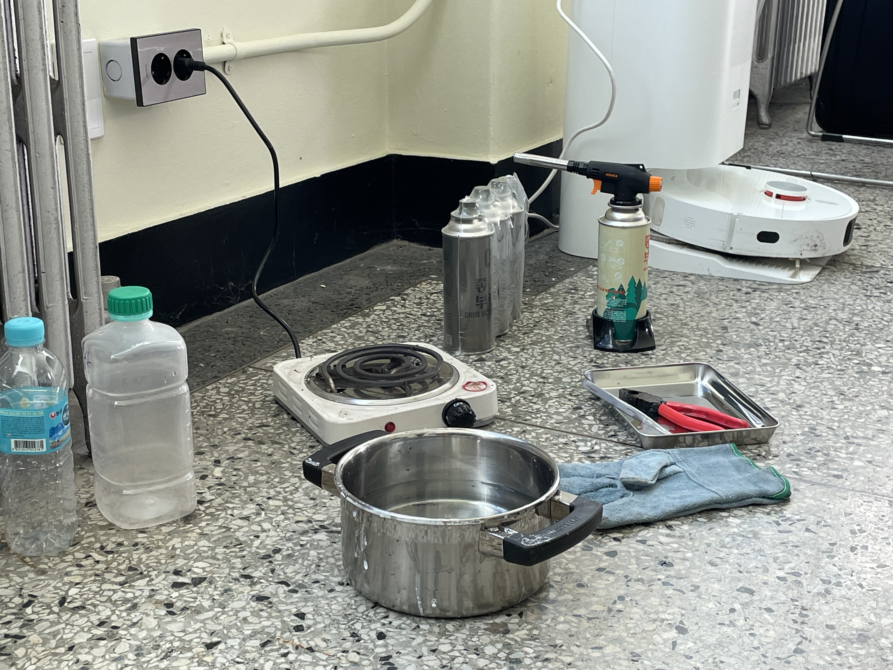
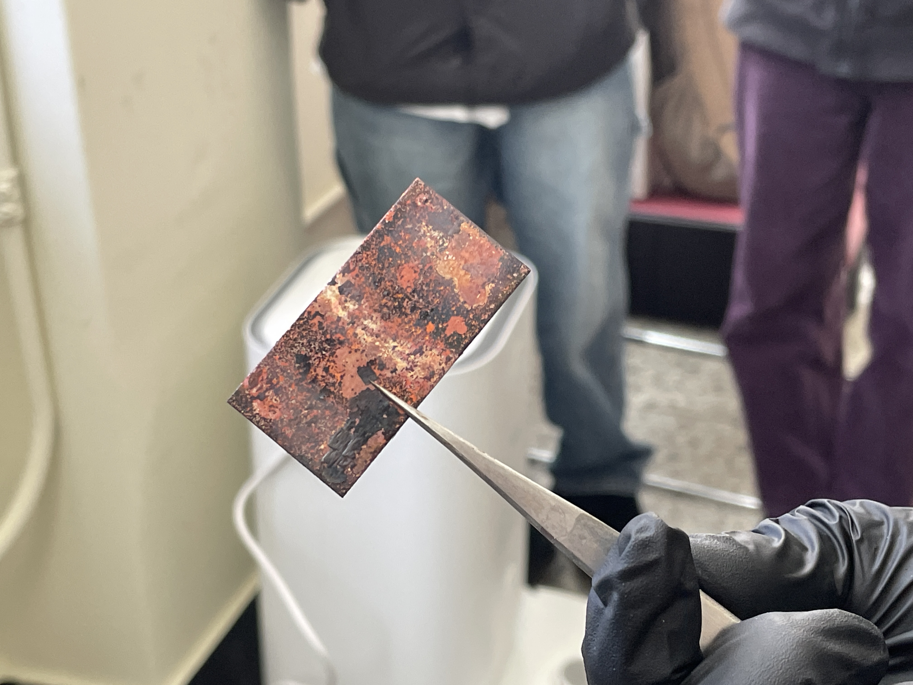
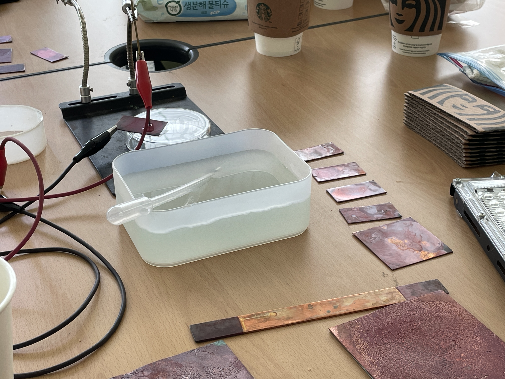
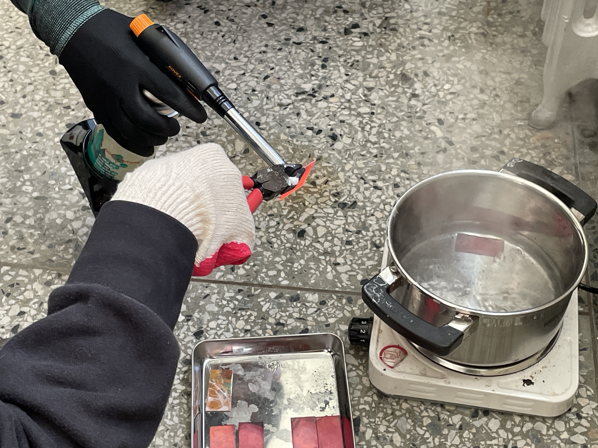

ETA seminar 에너지x기술x예술 세미나
이 세미나에서는 오늘날 디지털 기술과 예술을 그것의 주요 동력인 (전력)에너지에 주목하여 비판적으로 살펴보며, 예술과 기술이 융합되는 지점에서 넷-제로(Net-Zero)를 향해 나아갈 수 있는 방법을 실제 사례들과 전문가들의 경험을 통해 탐구해본다.
[세미나 1회차]
기후위기와 미술관의 고민: 국립현대미술관 <미술관 탄소 프로젝트>
국립현대미술관 다원예술 2022 <미술관 - 탄소 - 프로젝트>는 기후변화라는 인류세 현상에 직면한 미술관이 어떤 고민과 실천을 해야 하는지를 질문하는 자리였다.
그 시작으로 국립현대미술관에서 전시가 만들어질 때 발생하는 탄소배출량을 전시 관련 활동별로 산정했다.
그리고 개별 활동과 연결하여 여러 프로젝트를 기획했고, 다양한 분야의 사람들이 미술관에 모여 고민을 공유하고 논의를 시작하는 자리를 가졌다.
기후변화와 탄소배출량은 객관적 '사실의 문제'이기도 하지만, 동시에 '협상의 지점'이자, 동시대 미술관을 새롭게 정의하고, 다르게 작동시키는 '정치적 행위자(actor)'이다.
이번 세미나는 에너지, 지속가능성, 기후변화등을 인류세와 미술관의 교차점에서 이야기해보려고 한다.
연사: 국립현대미술관 성용희 학예연구사
성용희는 페스티벌 봄 사무국장, 국립아시아문화전당 예술극장 조감독으로 활동하며 여러 동시대예술 기획을 해오고 있다. 현재는 국립현대미술관에서 학예연구사로 일하면서 다원예술 등을 기획하고 있다. 최근 기획으로는 다원예술 2025 <숲>, 다원예술 2024 <우주 엘리베이터>, 다원예술 2022 <미술관 - 탄소 - 프로젝트>, 다원예술 2020 <모두를 위한 미술관, 개를 위한 미술관> 등이 있다.
[세미나 2회차]
한국의 전력시장 구조와 기후위기 대응을 위한 예술의 역할
한국의 전력시장 구조는 공기업 한국전력의 독점 구조로 운영되며 전기요금은 사실상 정부와 대통령이 결정하고 있다.
그 결과 한국의 전기 요금은 원가에 연동되지 않고 일정하고 저렴하게 유지된다.
이는 가계 부담을 덜어주는 듯 하지만 결국 누군가가 갚아야 할 공기업의 부채를 기하급수적으로 키웠고, 기후위기 시대에 에너지 절약 실천과 에너지 전환의 동력을 희석시킨다.
전력 시장의 구조는 크게 발전, 송전, 배전 단계로 나뉜다.
각각의 단계가 현재의 전력시장 구조에서 가지는 문제점들을 살펴보고, 에너지 전환(발전, 송전)과 에너지 소비 저감(배전)을 위해
예술적인 아이디어가 어떤 도움을 줄 수 있는지 사례들을 통해 알아본다.
연사: 서울대학교 환경에너지연구소 박사과정 연구자 류호재
서울대학교 환경대학교 환경계획학과 박사과정을 수료하였다. 주 연구분야는 에너지 소비, 쓰레기 재활용 행동, 친환경 실천, 소비문화다. 우리 사회의 평범한 사람들의 생활방식 속에서 에너지와 자원 낭비 세태를 발견하고, 개선할 수 있는 방안을 찾고자 연구한다. 최근에는 반려동물 돌봄에 내재된 에너지와 폐기물을 추정하는 연구를 이어가고 있다.
[세미나 3회차]
동물권 및 생태적 시각으로 문화예술 이면(裏面) 읽기
창작 재료 선택부터 전시를 만들면서 수행하는 관성적 방법을 동물권 및 생태적 시각으로 바라볼 때 드러나는 부분은 무엇일까. 전시를 만드는 과정이 환경에 덜 빚지고, 종차별적 착취와 탄소발생량을 줄이는 실천을 지향할 수 있도록
선택지를 제공하고자 한 연구인 '비거니즘 전시 매뉴얼'을 소개한다.
가벽 앞에 재현되는 미학적 성과가 흰 벽에 환영(幻影)으로만 머무는 것이 아니라, 가벽 너머의 세계에서 실천과 사유의 일부가 되기 위해 우리는 무엇과 헤어져야 할지 함께 고민해 본다.
연사: 미술작가 및 기획자 김화용
김화용은 이데올로기, 젠더와 정상성을 비판적으로 질문하며 영상, 글, 전시 등 여러 매체로 타자와 타자성, 비인간 동물을 가시화하는 실천적 작업을 해왔다. 전시 <몸이 선언이 될 때>, 공공예술프로젝트 <제로의 예술>, 출판 <제로의 책> 등을 기획했고, 사회 안에서 예술의 정치적 가능성을 고민하는 '옥인 콜렉티브'의 설립자이자 멤버로 활동하며 2018년 국립현대미술관 올해의 작가상 후보에 올랐다. '닭'의 생(生)을 경유해 사회 시스템에 의해 가시거리에서 밀려난 비인간 동물과 소수자를 인식하는 태도에 대해 질문하는 프로젝트 <집에 살던 새는 모두 어디로 갔을까>를 설치, 퍼포먼스, 다큐멘터리로 확장-변주해 발표했고, '소금'을 매개로 경계 바깥으로 밀려난 존재들의 이야기를 엮은 <화성에도 짠물이 흐른다>(타이그레스 온 페이퍼, 2025)를 썼다.
[세미나 4회차]
기술과 예술로 에너지 실험하기: 구리 착색법으로 만드는 DIY 솔라패널/광전소자
창작 재료 선택부터 전시를 만들면서 수행하는 관성적 방법을 동물권 및 생태적 시각으로 바라볼 때 드러나는 부분은 무엇일까. 전시를 만드는 과정이 환경에 덜 빚지고, 종차별적 착취와 탄소발생량을 줄이는 실천을 지향할 수 있도록
선택지를 제공하고자 한 연구인 '비거니즘 전시 매뉴얼'을 소개한다.
가벽 앞에 재현되는 미학적 성과가 흰 벽에 환영(幻影)으로만 머무는 것이 아니라, 가벽 너머의 세계에서 실천과 사유의 일부가 되기 위해 우리는 무엇과 헤어져야 할지 함께 고민해 본다.
연사: 휴먼 인프라스트럭처(장정우 & 왕지은)
휴먼 인프라스트럭처는 서울을 기반으로 활동하는 왕지은과 장정우의 2인조 시청각 노이즈 그룹이다. 이들은 사이버네틱 음악의 기법을 필름으로 그리고 아날로그 비디오로 확장하여 피드백 기반의 오디오=비주얼 시스템을 연주한다. 이들이 추구하는 오디오=비주얼이란 오디오가 인과적인 방식으로 비주얼에 영향을 미치거나 비주얼이 소리를 결정하는 방식이 아닌, 오디오와 비주얼이 여러 신체를 매개로 서로가 서로를 구축하는 방법이다.최근에는 여러 다른 전기화학적 방법을 활용하여 필름에 자기생성적인 이미지와 패턴을 새기고 이를 작동시키는 여러 장치들을 개발하는 작업에 전념하고 있다. 휴먼인프라는 이러한 작업을 통해 오래되었지만 결코 낡지는 않은 전자 미디어를 밑바닥에서부터 다시 만들어간다. 휴먼인프라는 또한 직접 운영하는 공간 '개로랩' 을 포함한 여러 장소에서 워크숍, 세미나, 스크리닝 등 또한 기획하고 진행하여 왔다.
Workshop 전통 착색 기법으로 DIY 솔라셀 만들기
4회차 세미나 연계 워크숍으로, 휴먼인프라의 장정우, 왕지은 작가가 가이드하였다.
'전통 착색 기법으로 DIY솔라셀 만들기' 워크샵에서 참가자들은 구리 판과 몇가지 재료들만을 가지고 작동하는 태양광 패널을 직접 제작해보는 시간을 갖는다. 전자소자를 다소 '공예적인' 방식으로 밑바닥에서부터 다시 제작하고 이를 기반으로 빛을 전기, 그리고 소리로 변환하는 테스트이자 놀이를 진행하면서 참가자들은 광전소자/반도체와 그것의 (대안적) 생산과 사용 방식에 대해 고민하게 된다.
- 과정 요약
- 구리판 가공 및 세척
- 부탄 가스토치를 이용한 구리판 가열
- 끓는 붕사 수용액 (20%)에 가열한 구리판을 투하
- 열 식힘 및 세척
- 동판 표면의 전도성 테스트
- 작동 테스트 (소금물 용액 전해질)
- 스피커에 전극을 연결
- 여러 광원을 소리로 변환하며 들어보기